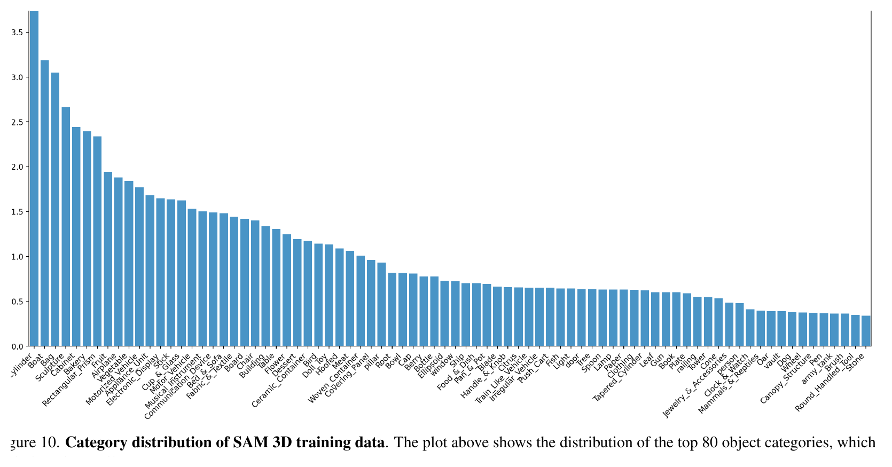
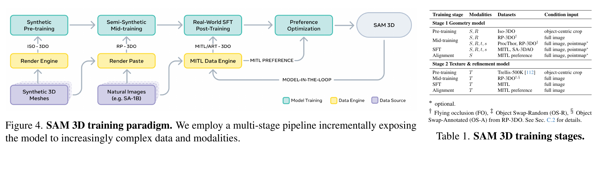
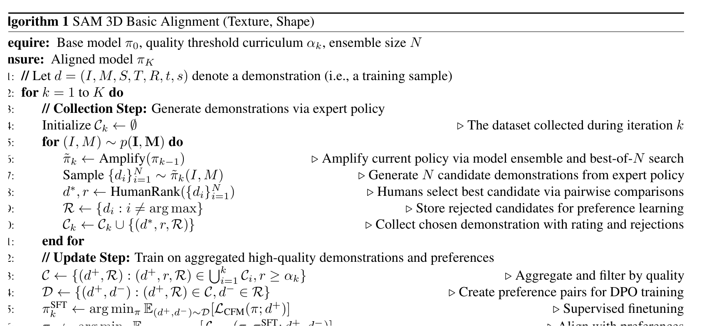
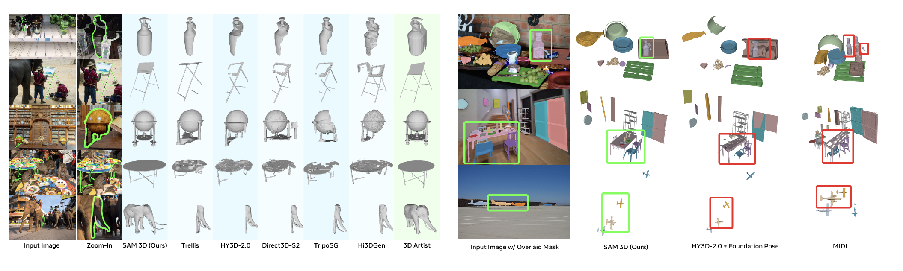
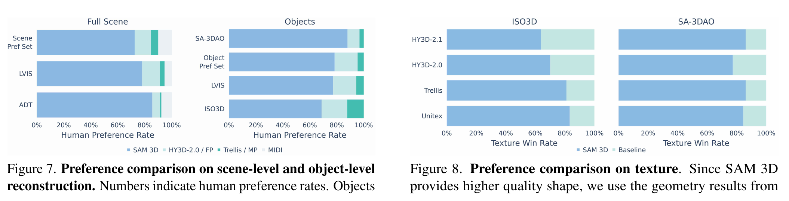
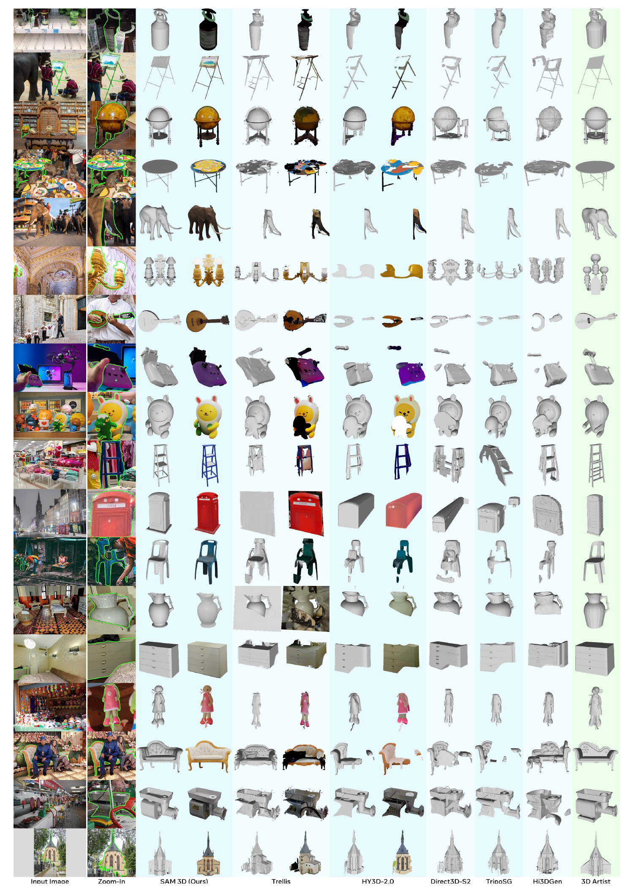
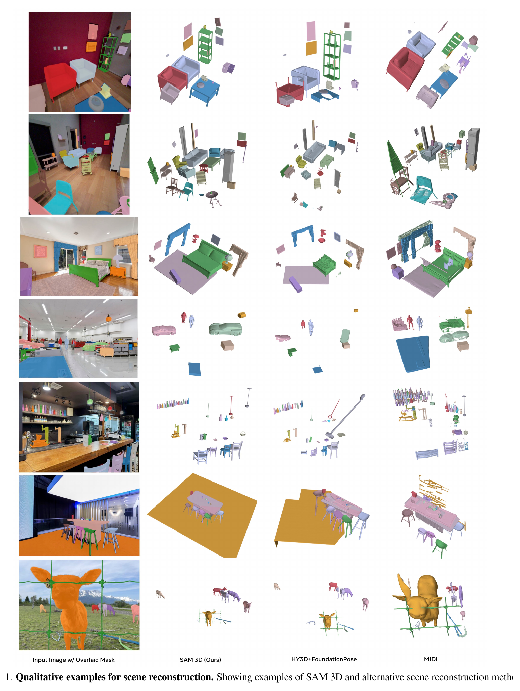

SAM 3D 深读：单张自然图像如何变成可组合 3D 场景？
导读。SAM 3D 真正要回答的问题不是“能不能从单图出一个漂亮 mesh”，而是：如果输入是遮挡、杂乱、尺度未知的真实自然图像，模型如何同时恢复每个物体的形状、纹理和在场景中的布局？论文给出的答案是一个闭环系统：先用合成数据学 3D 先验，再用人和模型共同生成的真实图像-3D 对齐数据做 post-training，最后用偏好数据进行 SFT/DPO 对齐。核心结论是：真实图像中的 3D 重建瓶颈不只是架构，而是可规模化的 3D supervision。
核心问题。给定图像 $I$ 和目标 mask $M$，SAM 3D 想恢复的不只是可见表面，而是完整物体 $S$、纹理 $T$、旋转/平移/尺度 $(R,t,s)$。这比“单物体居中渲染图 → mesh”困难得多，因为真实图像里有遮挡、截断、背景上下文和多个物体。
一句话贡献。论文把 3D object generation、layout estimation、human/model-in-the-loop data engine、SFT/DPO post-training 放到同一套训练链路里，目标是把 SAM 式 mask grounding 推到 3D。

1. 先问核心问题：为什么真实图像的 3D 重建比 demo 难得多？
许多 image-to-3D 方法在孤立物体、干净背景、合成渲染或产品图上表现不错，但真实图像要求模型从上下文中“猜完整”：椅子腿可能被桌子挡住，窗户只露一角，玩具和家具混在同一张图里。SAM 3D 把任务定义为从 $(I,M)$ 估计一个条件分布，而不是单点回归：
公式读法
$S$ 是 3D shape，$T$ 是 texture，$R,t,s$ 是物体相对相机或场景的旋转、平移与尺度。这个公式提醒我们：SAM 3D 不是单纯预测 mesh 顶点，而是在恢复一个可放回场景的 3D object。
问：为什么不能只用更多合成数据解决？
引导：合成数据能提供干净 3D ground truth，但真实图像里最难的是 occlusion、clutter、mask-following 和人类偏好的“看起来对”。
答：论文把训练分成 synthetic pre-training、semi-synthetic mid-training、real-world post-training。合成数据负责基础形状先验，真实数据和偏好对齐负责让模型知道哪些补全在人类看来可信。
2. 整体贡献：作者明确新增了什么？
| 贡献 | 作者明确提出 | 正文证据 | 边界 |
|---|---|---|---|
| Foundation model for 3D objects | 从单张图像重建 geometry、texture 和 layout。 | Fig. 1/2 展示可组合场景与两阶段模型架构；Table 2/3 比较 shape/layout 指标。 | 任务仍依赖目标 mask；自动全场景实例分割不是本文主问题。 |
| MITL/HITL data engine | 用 model-in-the-loop + human selection/pose alignment 收集真实图像 3D supervision。 | Fig. 5 与 Algorithm 1 展示数据闭环；Supplement 给出标注规模。 | 标注成本、平台细节、质量控制完整策略未全部公开。 |
| Multi-stage training + alignment | synthetic pre-training、render-paste mid-training、SFT、DPO、distillation。 | Fig. 4/Table 1 与 Table 4 展示阶段性收益。 | 论文披露 training tokens，但未完整披露硬件账本。 |
| Benchmark SA-3DAO | 真实自然图像上的 artist-created mesh benchmark。 | 实验部分说明包含 1K 个 3D artist-created meshes。 | benchmark 规模相对真实互联网分布仍有限。 |

3. 数据集与任务：SAM 3D 的“隐形模型”是什么？
论文中的数据不是一个简单数据集，而是一个生产 3D supervision 的系统。pre-training 使用约 2.7M 个 3D meshes，渲染 24 个视角，形成 Iso-3DO；mid-training 构造 61M render-paste samples、2.8M unique meshes 的 RP-3DO；post-training 阶段通过数据引擎标注近 1M 张图片，得到约 3.14M untextured meshes、约 100K textured meshes，以及布局与偏好样本。

| 数据 | 规模/来源 | 训练作用 | 缺失或注意点 |
|---|---|---|---|
| Iso-3DO | 2.7M meshes；每个 24 views；约 2.5T training tokens | Stage 1 pre-training：学习孤立物体 shape/texture 先验 | 具体 licensed datasets 的完整清单论文未完全展开 |
| RP-3DO | 61M samples；2.8M unique meshes；约 2.7T training tokens | Stage 1.5 mid-training：mask-following、occlusion robustness、layout | render-paste 的真实感仍有限，需 post-training 弥合 domain gap |
| MITL-3DO / Art-3DO | 近 1M images；约 3.14M untextured meshes、100K textured meshes | SFT / DPO：真实图像对齐与偏好优化 | 标注成本、标注人员分布和完整质量控制论文未说明 |
| SA-3DAO | 1K artist-created meshes from natural images | 评测：shape、layout、preference | 规模有限，但比孤立合成 benchmark 更贴近真实输入 |

数据引擎为什么能闭合 domain gap：一个 bootstrap
真实图像没有 3D ground truth，这本身是先有鸡还是先有蛋。三段式 curriculum 把它拆开：合成 Iso-3DO 给形状/纹理先验；render-paste 注入 mask-following 与遮挡鲁棒性，但真实感有限；数据引擎再用当前模型对真实图像提议 3D、由人工校验改正，产出真实图像监督去回训模型——一个自我改进的闭环。它能 work 的关键是：每一轮只要求模型“好到能给人一个可修的草稿”，而验证比从零标注便宜，于是标注成本可控、真实覆盖却能滚大。这条机制可从两个独立角度交叉验证：(i) 数据引擎成功率曲线（图 8 左）先在常见类提升、再覆盖长尾，且评测放在真实图像的 SA-3DAO 而非合成 benchmark；(ii) §3 表里明确写 render-paste 真实感有限、“需 post-training 弥合 domain gap”——若收益只来自合成规模，后训这一段就不该有效。
问：为什么 Supplement 的类别分布图值得放进正文？
答：因为它显示训练数据是长尾的。长尾意味着模型不只是记常见椅子/汽车，还要处理消防栓、遮阳棚、路牌、玩具等真实图像里的杂物；但长尾也意味着罕见类标注质量和覆盖仍可能成为失败来源。
4. Pipeline 拆解：数据流、模型流和训练流如何衔接？
可以把 SAM 3D 分成两条 pipeline。第一条是数据流：真实图像 → 选目标/mask → 生成候选 3D → 人类 pairwise selection → 2.5D scene alignment → SFT/DPO。第二条是模型流：image/mask/context/可选 pointmap → Geometry model → coarse shape/layout → Texture & Refinement model → mesh / Gaussian splat decoders。


问：为什么数据引擎要先让人“选”，而不是让人直接建模？
引导：3D mesh creation 很贵，但人类比较两个候选哪个更像输入图像便宜得多。
答：这就是 model-in-the-loop 的放大效应。模型先生成 $N=8$ 个候选，人类选择最优并给质量评分；失败样本再进入艺术家建模或后续模型改进。随着模型变强，它自己产生的候选越来越多地成为可训练数据，论文称最终约 80% 的标注数据由 SAM 3D 生成。

5. 模型与方法：两阶段架构为什么必要？
先问为什么要两阶段、还要把位姿一起去噪。单图 3D 的难点不在“画一个 mesh”，而在输出同时耦合两类完全不同的未知量：物体在标准坐标下的内在形状，和它在相机里的外在摆放 $(R,t,s)$。若把两者分开、先后预测，误差会互相放大——位姿错了，形状监督就不自洽；形状错了，位姿又无从定义。所以真正的问题是：能不能让“是什么形状”和“摆在哪里”在同一个过程里相互校准？
Geometry model 先预测 coarse shape 和 layout。它接收 cropped object、full image、object mask，以及可选 scene point map $P$，输出粗体素 shape $O\in\mathbb{R}^{64^3}$ 和 $(R,t,s)$。Texture & Refinement model 再在 coarse shape 的 active voxels 上做 sparse latent flow，补充高分辨率几何细节和 texture，最后由 mesh decoder 与 Gaussian splat decoder 输出 3D asset。
公式读法
$O$ 是 coarse voxel shape，$P$ 是可选 point map。式 3 的直觉是把 shape、rotation、translation、scale 都看作要去噪的变量，让模型同时学习“对象是什么形状”和“它在图中哪里”。若去掉第一阶段，第二阶段缺少可靠几何骨架；若去掉 refinement，输出会更像 coarse shape 而不是可用资产。
为什么 flow matching 能把位姿和形状一起去噪
flow/扩散模型本质上是学一个把简单噪声分布搬到数据分布的速度场（对扩散/流模型的系统梳理可参考苏剑林 [archives/9119]、[archives/5776]）。式 3 正是把这套框架用在一个异构状态上：把形状 $S$、旋转 $R$、平移 $t$、尺度 $s$ 拼成同一个状态，对每个模态学一个共享条件 $c=(I,M)$ 的速度场 $v_\theta^m$，按 $\omega_m$ 加权。因为它们共用“噪声 → 数据”的同一传输过程，“是什么形状”和“摆在哪里”是在采样的每一步里一起被去噪、相互校准，而不是先后拼接。代价是一条假设：每个变量都要能定义良好的噪声路径与速度目标——$S$ 在欧氏体素上没问题，但 $R$ 活在 SE(3) 流形上，CFM 是否良定取决于所选参数化；$\omega_m$ 也必须让各模态损失可比，否则某一模态会主导训练。

| 模块 | 论文披露 | 技术作用 |
|---|---|---|
| Feature encoding | DINOv2 features from cropped object + mask and full image + mask | 同时获得局部目标细节与全局场景上下文 |
| Geometry model | 1.2B parameter flow transformer; Mixture-of-Transformers; outputs $O,R,t,s$ | 先解决“是什么形状、在场景哪里” |
| Texture & Refinement | 600M sparse latent flow transformer | 对 active voxels 增加细节与 texture |
| Decoders | mesh decoder 与 Gaussian splat decoder | 服务不同下游渲染/资产需求 |
| Distillation | Geometry model NFE 从 25 降到 4 | 支持 sub-second shape/layout 推理；具体硬件延迟论文未完整列出 |
6. 训练细节与算力账本：哪些能复现，哪些仍缺？
补充材料披露了多阶段训练的 GPU 数、batch/GPU、epoch、learning rate 与 token 规模；但没有披露每阶段 wall-clock 时长、实际吞吐、checkpointing 和完整工程配置。因此本文只整理账本，不换算 GPU-hours / GPU-days。
| 模块 | 阶段 | 数据/输入 | 硬件与 batch | 学习率 / 长度 | 未说明 |
|---|---|---|---|---|---|
| Geometry | Pre-training | Iso-3DO；object-centric crop | 512 A100；batch/GPU = 6 | 200 epochs；LR $10^{-4}$；约 2.5T tokens | wall-clock、吞吐、总电费/账单未说明 |
| Geometry | Mid-training | RP-3DO / ProcThor；full image / pointmap | FO：320 A100 后接 128 A100；OS-R：256 A100；batch/GPU = 6 | FO 50+50 epochs；OS-R 12 epochs；LR $10^{-4}$；约 2.7T tokens | 完整数据混合比例与所有工程细节未说明 |
| Geometry | SFT / DPO | MITL-3DO / Art-3DO / preference | SFT：128 H200；DPO：128 A100；batch/GPU = 6 | SFT 100 epochs，LR $10^{-5}$；DPO 1 epoch，LR $2.5\times10^{-6}$；最终约 0.5T tokens | 人类/艺术家标注成本未说明 |
| Texture & Refinement | Pre / Mid / SFT / DPO | Trellis500K、RP-3DO、MITL preference | 256 A100、256 A100、192 A100、128 A100；batch/GPU = 4/4/4/3 | 245、80、89、2 epochs；LR $10^{-4}$、$10^{-4}$、$10^{-5}$、$10^{-6}$；EMA 0.9999/0.999/0.99 | 训练时长、精度设置、推理延迟细项未说明 |
算力说明
这些数字说明 SAM 3D 是重型数据与训练系统，而非单卡可复现的模型实验。由于论文没有给出 wall-clock，本文不做“按论文披露数字粗略估算”的 GPU-hours/GPU-days；缺失处统一记为“论文未说明”。
7. 实验结果：每张表到底支持了哪条主张？
7.1 Shape：SAM 3D 是否真的比 image-to-3D SOTA 更准？
Table 2 比较单物体 shape。SAM 3D 在 SA-3DAO 上 F1@0.01 从最强基线 Hi3DGen 的 0.1629 提升到 0.2344，vIoU 从 0.1531 提升到 0.2311，Chamfer 从最好基线 TripoSG 的 0.0844 降到 0.0400，EMD 从 0.2049/0.2057 降到 0.1211。这个结果支持“真实图像对齐数据提升几何准确性”的主张。


7.2 Layout：为什么联合生成比 pipeline 拼接更重要？
Table 3 比较 layout。SAM 3D joint model 在 SA-3DAO 和 Aria Digital Twin 上均显著优于 Trellis/HY3D + MegaPose/FoundationPose 等 pipeline；例如 SA-3DAO 3D IoU 达 0.4254，ADD-S@0.1 达 0.7232。关键不是单独 pose estimator 失败，而是单图 3D asset 和 pose/layout 相互耦合，pipeline 容易把形状误差传给姿态。

7.3 Human preference：指标外的“看起来对”是否也更好？
Figure 7/8 用人类偏好比较 scene-level、object-level 和 texture。论文报告真实图像上 object/scene 至少 5:1 偏好胜率，scene reconstruction 约 6:1 胜过 prior SOTA。这个证据比纯 Chamfer 更接近用户感知，但也依赖评测集、界面、采样和标注规则；它支持“实用质量更高”，不等价于所有场景都正确。

7.4 Ablation：收益来自数据、训练阶段还是偏好对齐？
Table 4 是最关键的消融。Pre-training 只有 F1=0.1349；加入 RP-3DO mid-training 后到 0.1705；SFT(MITL-3DO) 到 0.2027；DPO(MITL-3DO) 到 0.2156；再加入 Art-3DO 的 SFT/DPO 最终到 0.2344。这个阶梯式变化说明作者的主张不是“只靠大模型”，而是“合成先验 + 真实对齐 + 偏好优化 + 高质量艺术家数据”逐步贡献。



8. 局限与启发：如何批判性看待 SAM 3D？

问：如果要把 SAM 3D 用到真实系统，最先验证什么？
答：首先验证目标域的 mask 质量、遮挡分布、尺度/相机假设、生成 mesh 的拓扑可用性、纹理与几何一致性，以及多人/多物体交互场景。论文已经证明真实图像 3D 重建可以通过数据闭环显著提升，但部署系统还要面对错误传播和资产可编辑性。
资料来源与图像说明
- Xingyu Chen, Fu-Jen Chu, Pierre Gleize, Kevin J Liang, Alexander Sax, Hao Tang, Weiyao Wang, et al. SAM 3D: 3Dfy Anything in Images. CVPR 2026.
- Meta AI Research publication page：用于摘要、作者、发布说明与项目入口。
- CVF OpenAccess PDF 与 supplemental：用于图 1-9、Table 1-4、Algorithm 1、Supplement 图 10/11/13/14/20/21 的高分辨率 PNG 抽取。
- GitHub facebookresearch/sam-3d-objects：用于代码、demo、权重发布状态说明。图像仅用于学术交流解读；点击正文图片可查看本地 PNG。